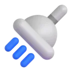
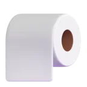

My English World
Book 4 · My Picture Dictionary
Unit 22
Bathroom
Tap any picture or sentence to listen.
🖼️ Look and say
bath

shower
soap
toothbrush
toilet
mirror
sponge

tissue
▶ Play all words
💬 Words in sentences
I take a shower every morning.
🔊
Wash your hands with soap.
🔊
This is my toothbrush.
🔊
I look in the mirror.
🔊
▶ Play all sentences
‹ In the Kitchen
All units
Transport ›